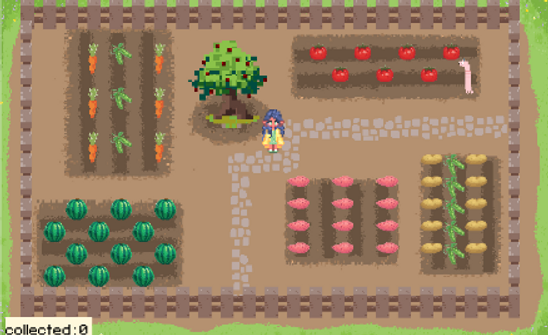

THE GARDEN
FINAL PROJECT FOR SOFTWARE DESIGN, SPRING 2022
Partner: Olga Pidruchna
A Stardew Valley-inspired game created using Python's Pygame library
All source code can be found in this GitHub repository.
Read about the details of our game here!
For the final project of my Software Design class, we were tasked to create an interactive game using Python's Pygame library. We were very interested in creating a role-playing game using pixel art.
The idea of the game is to move the player around the screen to collect vegetables. When the player collects a certain amount, they win a mantis shrimp (the name of our group)!
